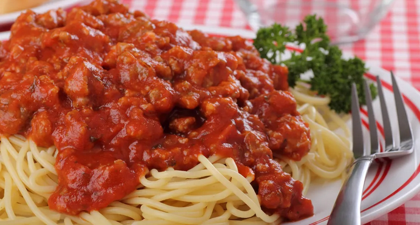

Pasta with Red Sauce and Meat

Cheap, easy to make and takes about 20minutes to prepare. What more could you ask for?
Recipe
1lb of Spaghetti.
1lb of ground beef (20% Fat preferred)
1 jar of Ragu or Prego Meat sauce
1/2 Onion, 1/2 bell pepper
1tps of oil / butter
Salt and pepper to taste.
Steps
In a large Pot, boil pasta for about 5-7 minutes until al dente or desired tenderness.
In a medium sauce pan on medium high heat, cook onions and pepper until they change color, about 2-3 minutes.
Turn heat to high and place ground beef in. fully cook beef.
Once beef is fully cooked, add half the jar of sauce, add more depending on if you want it saucey or not.
Once the sauce and meat are fully mixed you are ready to serve!